Aplicativo do Save the Green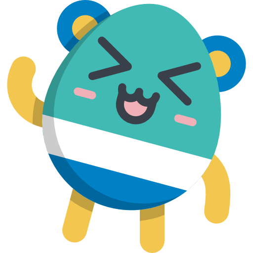
Aplicativo do Save the Green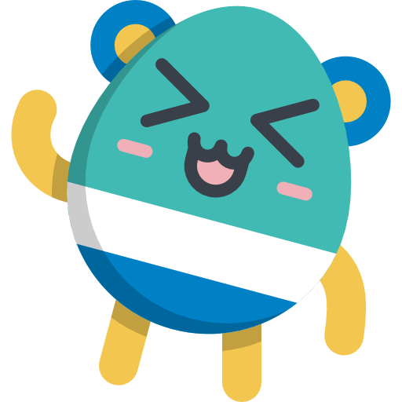
Esse site possui um aplicativo que traz um jogo com o objetivo de ensinar as cores das latas de lixo recicláveis de forma didatíca para crianças, com cartoons e um mascote chamado Bart.
Quer saber como o aplicativo funciona? Venha que o bart te ensina.
Telas iniciais
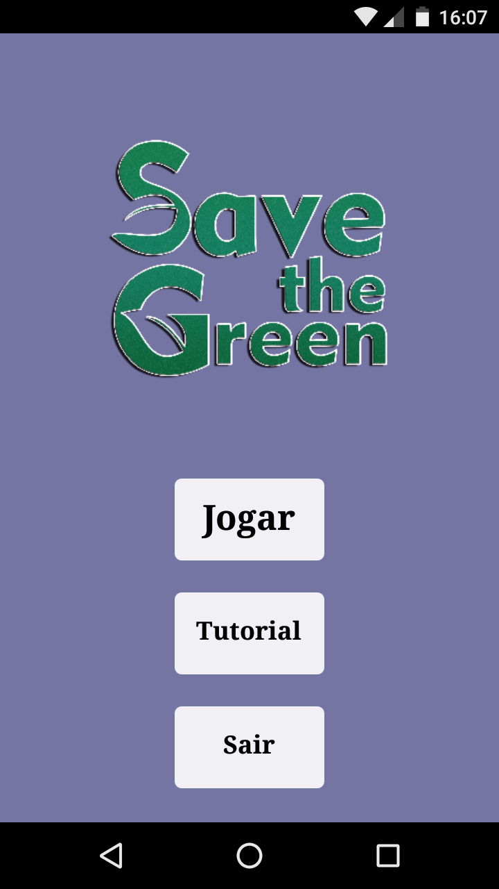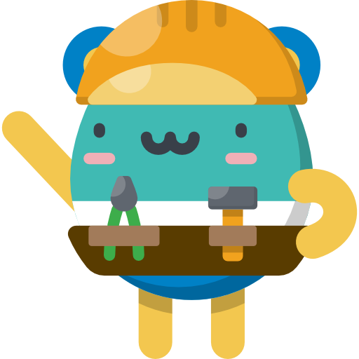Esta é a primeira tela do aplicativo, nela você pode escolher jogar ou fazer o tutorial. Não sabe como o jogo funciona? Não tem problema, vamos ao tutorial.
 Esta é a tela de tutoriais, aqui você pode escolher entre os tutoriais do jogo, ou um tutorial que ensina alguns conceitos de sustentabilidade
Esta é a tela de tutoriais, aqui você pode escolher entre os tutoriais do jogo, ou um tutorial que ensina alguns conceitos de sustentabilidade
Tutoriais
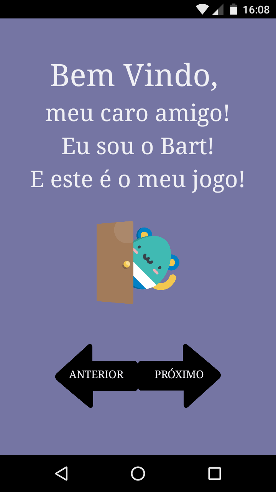 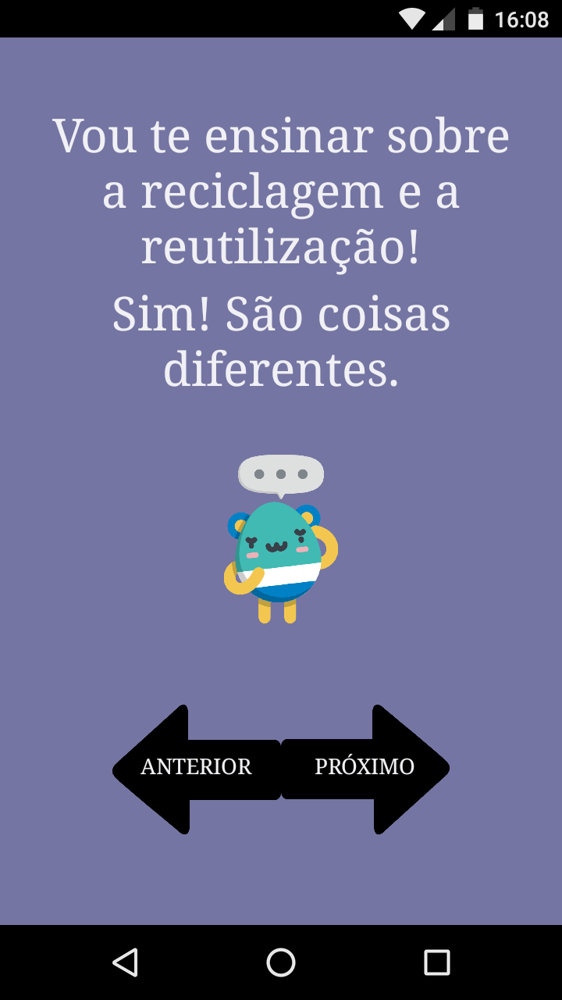 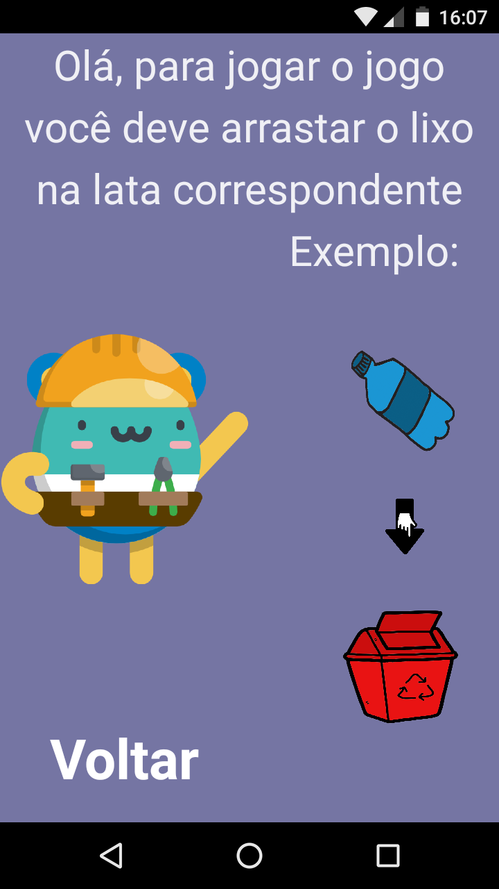 Aqui temos umas imagens dos tutoriais do aplicativo. Caso você tenha alguma dúvida em utilizar o aplicativo, você pode sempre vir a esses tutoriais. Para jogar o jogo você deve arrastar o lixo para a lata de lixo correta, no exemplo, a garrafa de plástico no lixo vermelho.
O Jogo
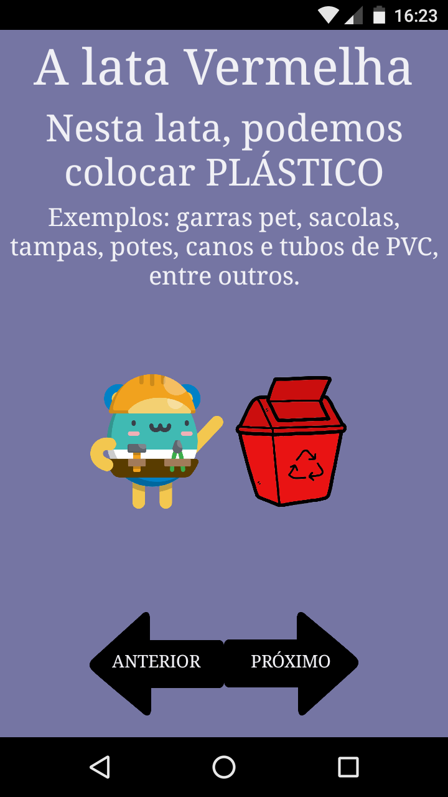Você não sabe exatamente quais as cores dos lixos recicláveis? Não tem problema, o tutorial "Aprenda sobre as cores das latas de lixo" mostra para você exatamente quais são as 10 cores dos lixos recicláveis. Lembrando que essas cores são internacionais, ou seja, todos os países usam as mesmas cores!
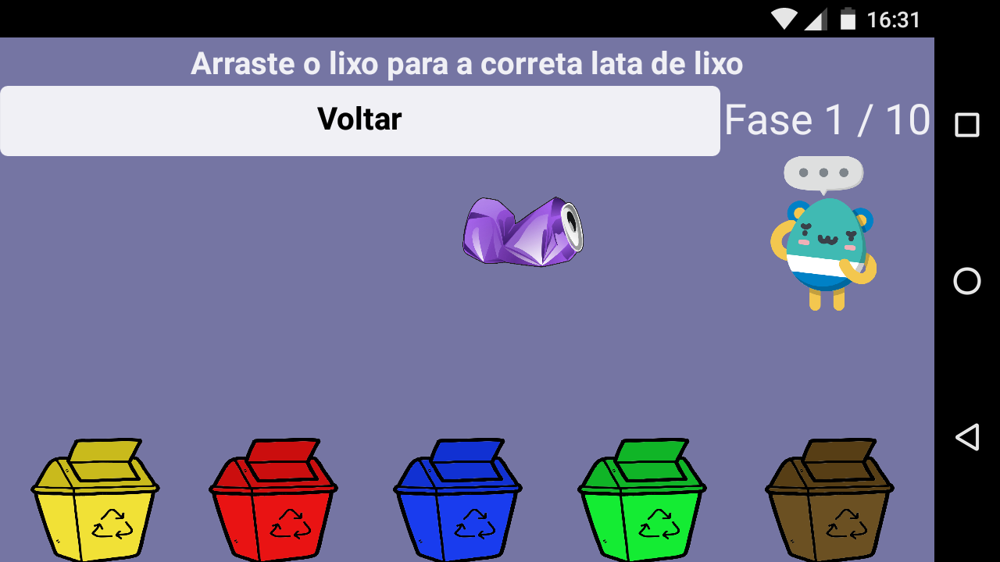Como já foi dito, o jogo você deve arrastar o lixo para a lata correta, cada lixo que você acerta, o contador de fase aumenta. São 10 fases, uma para cada cor. Boa sorte!
Como o jogo foi feito?
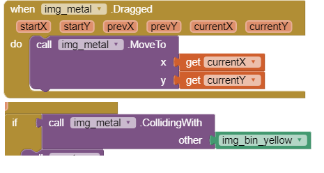Bem, se nós colocassemos todas as etapas de criação e explicassemos todas elas, você provavelmente dormiria. E por isso, separamos uma palinha da lógica usada para fazer o jogo. Nesta parte usamos um bloco que possibilita arrastar a imagem do lixo, e se ela enconstar na imagem da lata correta, você passa de fase!
Faça o dowload do aplicativo!
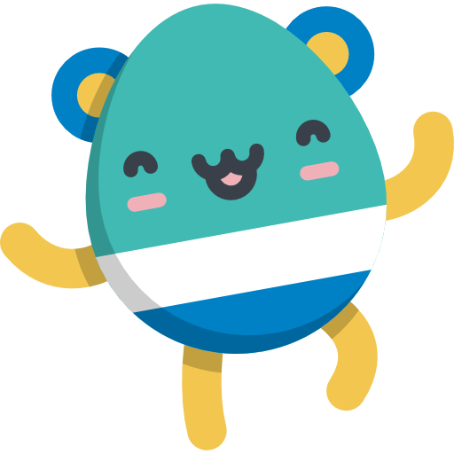Ficou com vontade de testar seus conhecimentos? Faça o download do aplicativo clicando no link aqui em baixo
Conheça as ONGS ambientais

Greenpeace

WWF (World Wide Fund for Nature)

Sikana

Water

IPE (Instituto de Pesquisas Ecológicas)

SOS Amazônia

ISA (Instituto Sócio ambiental)

Sea Shepherd